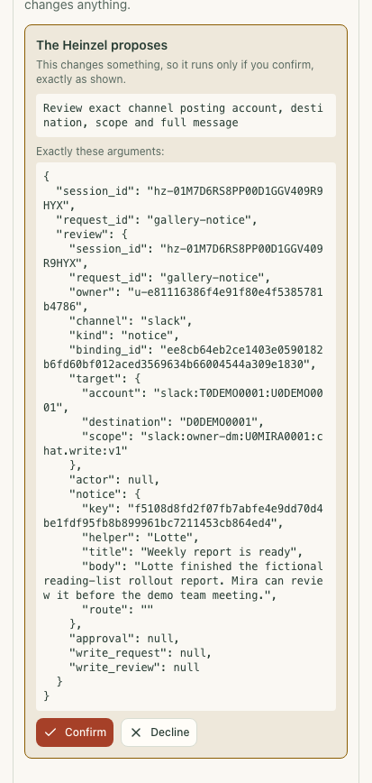
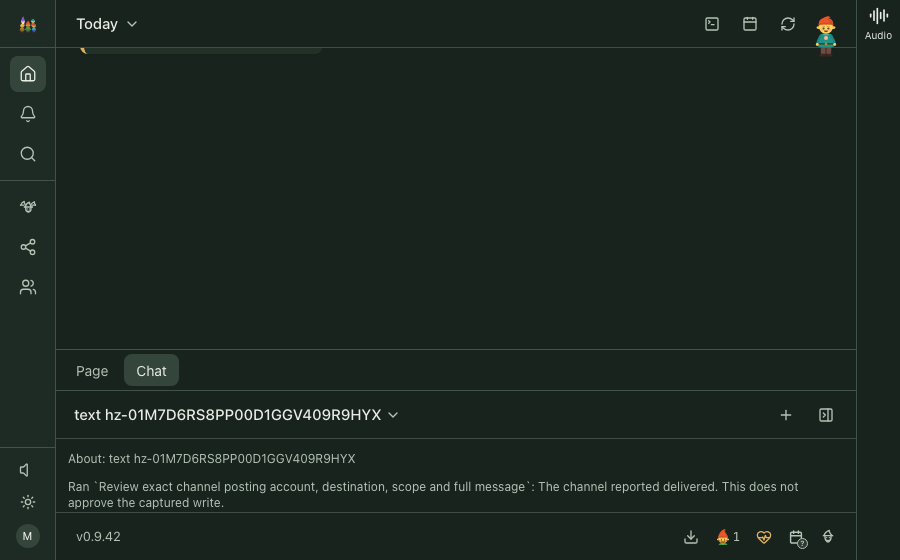
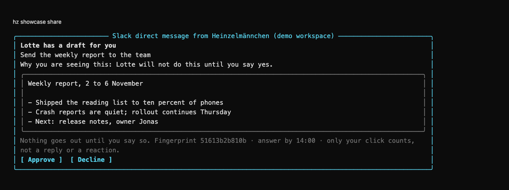
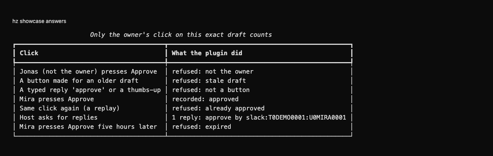

heinzel-slack
Isolated demonstration profile · Core 0.9.42 · Review these captures before committing. Click an image to inspect it at full size.

UI · Demo data: Mira reviews the fictional Slack account, destination, scope and complete weekly-report notice before delivery.
UI · Demo data: after Confirm, Core's chat reports that the channel delivered the fictional notice; this does not approve a captured write.
CLI · Demo data: the fictional weekly-report draft and printed button labels, rendered in the terminal from Slack message blocks.
CLI · Demo data: fictional clicks exercise the real decision code; Mira's exact approval records one reply while invalid attempts are refused.